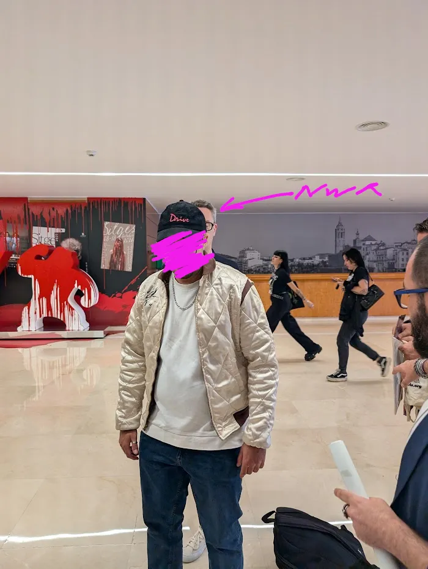
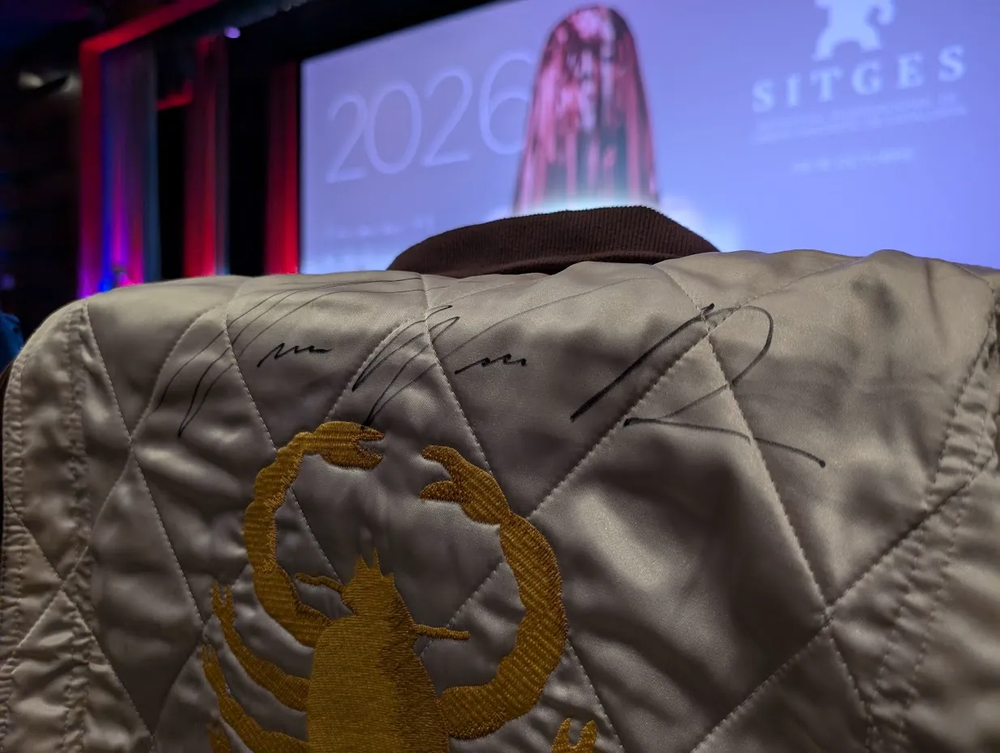
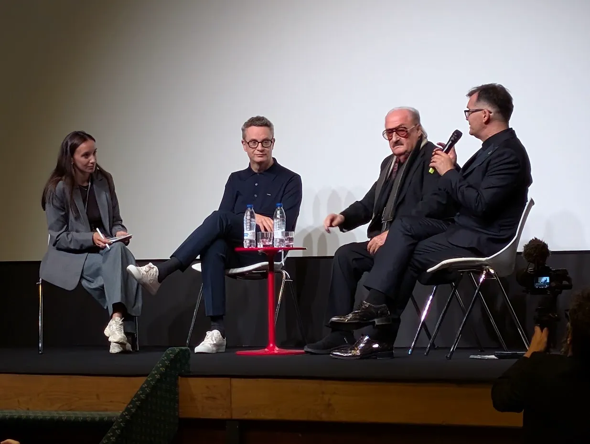

Sitges 2026 día 1 - Her Private Hell
EnRoot
Ayer asistí al primer día del festival de cine fantástico de Sitges, —cita obligatoria para todos los fans del fantástico y el cine de género, entre los que por supuesto me incluyo— para el estreno —en España— de la nueva película de Nicolas Winding Refn, Her Private Hell.
Junto a mí venía mi infatigable compañero de festivales, mi gran amigo Santiago, que es un auténtico devoto del director y que, para ser sinceros, fue el que me arrastró a este pseudoestreno de la nueva peli del danés. Era un jueves a las 16:00 y hacía un día de mierda, pero Santi me dijo: "Es un Giallo Cyberpunk" y me convenció.
Digo pseudoestreno porque la película se estrenó en el 79.º festival de Cannes este año y, a fecha de publicación de este blog, probablemente la tengáis en la plataforma MUBI, puesto que la compañía inglesa la adquirió hace ya unos meses.
Con motivo de este estreno se encontraba en Sitges el aclamado director de Drive y The Neon Demon, junto con el compositor Pino Donaggio, con quien ha colaborado para realizar la música de la película.
Santi llevaba su chaqueta de Drive firmada por el mismísimo Hellboy, Ron motherfucker Perlman, y tenía la firme intención de conseguir que se la firmara también su director.
Como sabíamos que el director haría una pequeña presentación previa a la proyección, nos esperamos en la puerta ante la mirada extraña del personal de seguridad, y poco antes de que cerraran las puertas del cine —casi nos perdemos la película— apareció Nico —ya le puedo llamar Nico— y le firmó la chaqueta a mi amigo. El frikismo en su estado más puro.


Bien, anotación fan completada; hablemos de la película. Definirla como Giallo cyberpunk es jugar demasiado con la sintetización; yo la definiría como caleidoscopio de neón lisérgico con retirada giallo neonoir chunga. Para hablar claro, parece ser un mejunje de ensoñaciones y fantasías estéticas del director entremezcladas con algunos temas familiares que, sinceramente, no acabé de entender. No creo haber sido el único.
Aún con todo eso, la disfruté mucho; tiene un par de escenas de acción que me recordaron al mejor Drive, una fotografía cuidadísima marca de la casa y todo el reparto está estupendo, sobre todo una Sophie Thatcher a quien, desde Heretic y Companion, estoy empezando a considerar como firme candidata al trono de la Scream Queen —trono que ostenta Mia Goth actualmente—, aunque, dicho sea de paso, es un ranking personal mío sin valor ni fundamento más que mi gusto personal.
Al finalizar la proyección, ante un público aturdido de violencia y neón, y que probablemente hacía media hora que había abandonado la tentativa de desenmarañar una trama imposible, apareció el bueno de Nico a realizar una ronda de preguntas y respuestas.

Las preguntas del público fueron bastante mediocres, para qué mentir, pero una chica que se sentaba en primera fila y que intuyo que era una periodista especializada —no como yo— le preguntó si el problema de salud que lo había mantenido tanto tiempo fuera de órbita había inspirado de alguna manera la película.
Nos contó que años atrás fue diagnosticado con una cardiopatía grave, que en sus propias palabras "hacía que la sangre fuera para atrás", y a razón de ello fue operado prácticamente de urgencia por, de nuevo en sus propias palabras, "el doble doctor de Tom Cruise".
Continuó diciendo que, si bien esa experiencia no había inspirado directamente la película, el hecho de estar al borde de la muerte sí le había impulsado a hacer el cine que él quería hacer, sin tapujos ni objeciones.
Que con esta película había querido juntar todas aquellas cosas que le generan interés y de las que se ha ido empapando a lo largo de los años —como ser humano expuesto a la cultura pop que es— y hacer un mixup de todo ello.
Y de hecho, para ir terminando, es justamente lo que Her Private Hell es: un pastiche de fantasía giallo cyberpunk bastante entretenido aunque incomprensible, tan privada y hermética como fascinante, y que seguramente horrorice a la mayor parte del público, pero que considero que, como todas las películas del director, es una experiencia que vale la pena vivir.